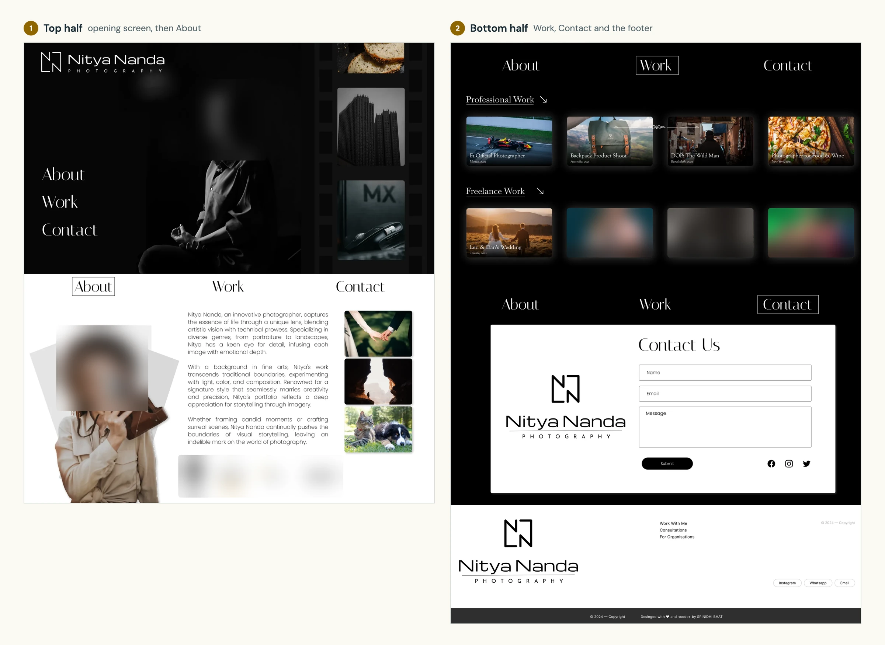
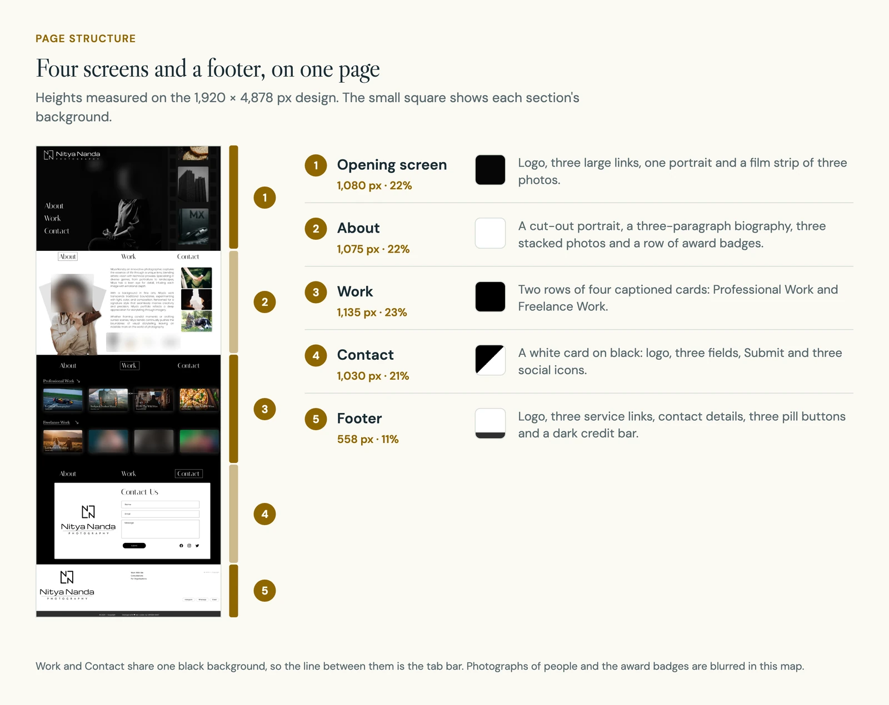
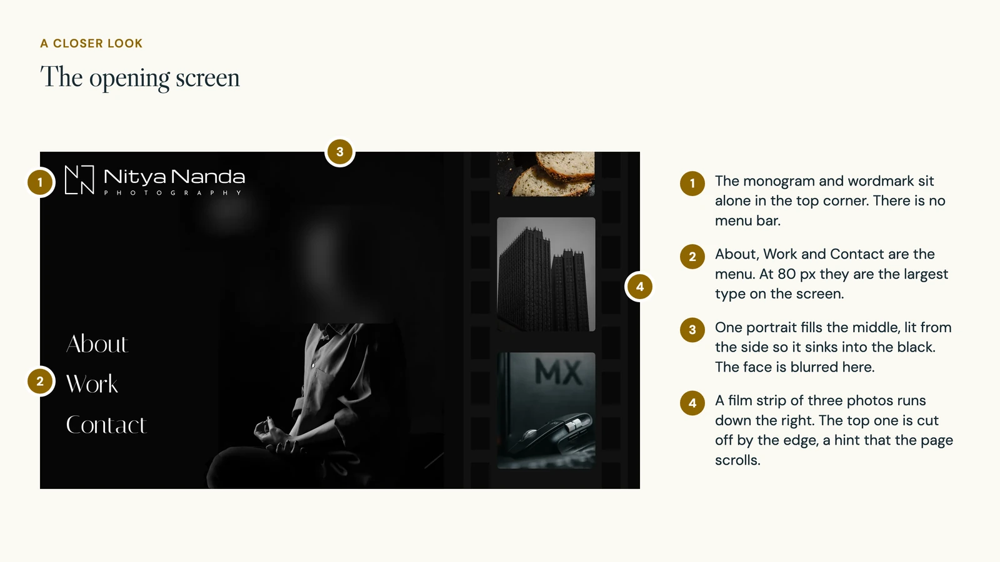
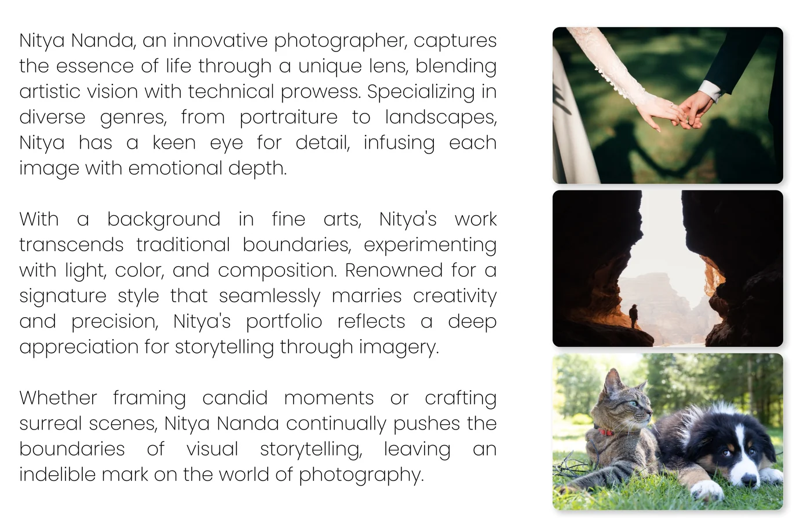
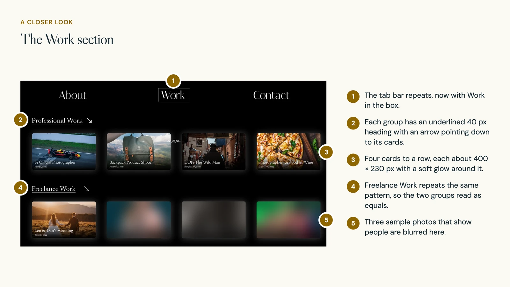
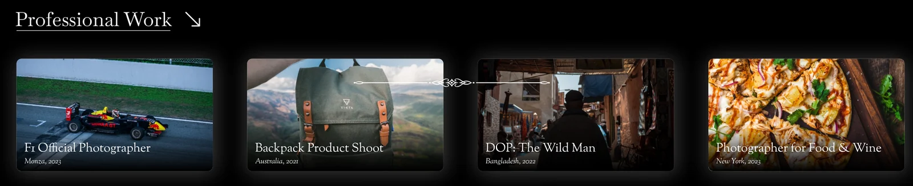
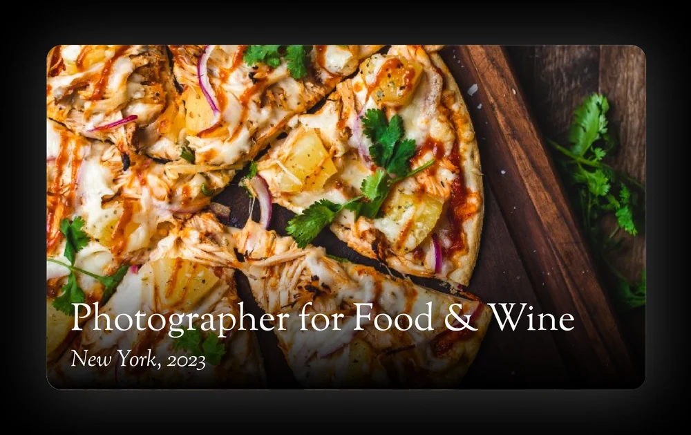
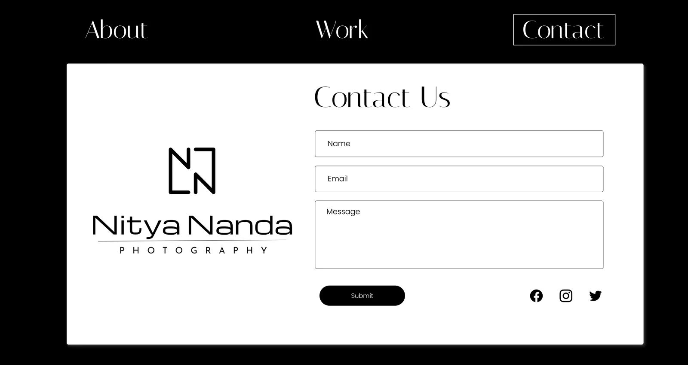
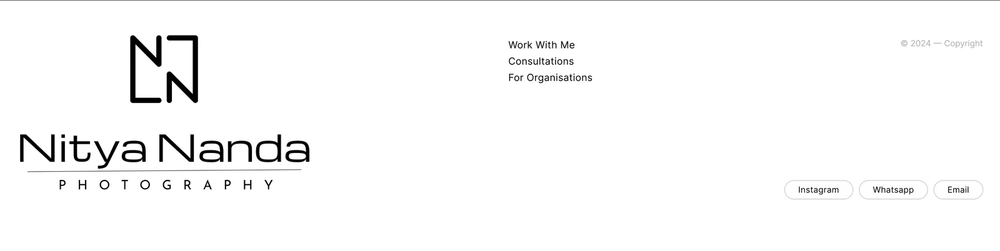
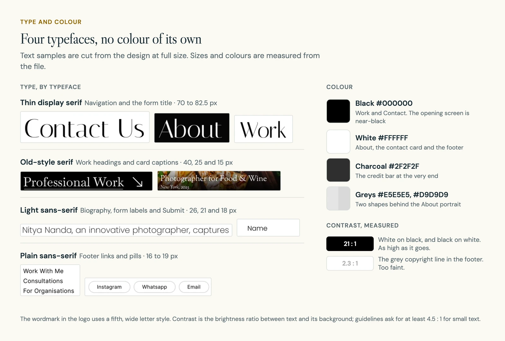

Nitya NandaDesign case study · 6 min read
A photography site that leaves room for the photographs.
A one-page portfolio concept for a photographer. Three words run the whole site: About, Work and Contact.
- Role
- Page structure, navigation and visual design
- Team
- Solo
- Timeline
- 2021–22
- Why
- A brief I set myself. Not a client commission
- Platform
- Desktop web. One long page, drawn 1,920 px wide
- Content
- Sample photographs, shoot names and award badges. Not real credentials
- Status
- Visual concept. Not built and not tested with users

In short
- The brief I set myself: design a photographer's portfolio where the interface stays quiet and the pictures do the talking.
- What I did: one long page with four screen-height sections (opening, About, Work, Contact) and a footer, tied together by a three-word tab bar.
- The key idea: no brand colour. The page is black, white and grey, so all the colour on screen comes from a photograph.
- Where it stands: a single desktop mock-up filled with sample content. It was not built or tested.

01 The brief
A brief I set myself: keep the interface quiet
This is a concept, not client work. I set myself the job of designing a portfolio where a visitor sees pictures first, gets a feel for the person second and can get in touch third.
I had no research to lean on, so every decision here is design judgement. The page is my answer to one question: how little interface does a picture-led site need?
02 Structure
Four screens and a footer on one page
The whole site is one page, 1,920 px wide and 4,878 px long. The first four sections are each close to one full HD screen tall, between 1,030 and 1,135 px. The backgrounds run dark, white, black, then a white card on black.

One page keeps the visit to a single scroll. The cost is room. The Work section holds eight cards, and there is no gallery behind any of them.
03 The opening screen
The first screen is a picture and three words
There is no menu bar across the top. The three links sit in a list on the left in 80 px type, so they work as the headline and the menu at once. The rest of the screen belongs to a portrait and a film strip of photos.

05 About
Even the biography has pictures beside it
The About section has a cut-out portrait on the left, three short paragraphs in the middle and three photos stacked on the right. A row of four award badges sits under the text. The badges are sample content, so they are left out of the crop below.

06 Work
Two rows give two ways into the work
The Work section splits the pictures into Professional Work and Freelance Work, four cards each. The idea is that a visitor can head straight for the kind of job they have in mind.

Each card carries its caption inside the photo: a title in 25 px serif, then the place and year in 15 px italics, over a dark fade.


The split into professional and freelance is my assumption. Real visitors might look by subject or by style, and that would need asking.
07 Contact
The scroll ends at a short form
The last screen is a white card on black with three fields: name, email and message. A black Submit button and three social icons finish the card.

Below it, the footer repeats the logo and adds three service links and three pill buttons. The concept stops at the Submit button. There is no error message, no confirmation and no note on what happens next.

08 Type and colour
Black, white and four typefaces
There is no brand colour. The page is black, white and two greys, so the only colour on screen comes from the photographs.

Type is where I was less strict. A thin display serif does the navigation, an old-style serif does the work captions, a light sans-serif does the reading and a plain sans-serif does the footer. Two would have been calmer. The small grey copyright line also measures 2.3 to 1 against white, which is too faint.
09 What comes next
What it would take to go further
- Build it with real photographs at sensible file sizes, with text descriptions and keyboard access.
- Design the phone layout. Four cards across and 80 px links will not fit a narrow screen as drawn.
- Add the missing form states: errors, a confirmation and what happens next.
- Ask people choosing a photographer which grouping they expect to find.
- Cut the typefaces to two and darken the small grey text.
10 What I learned
A quiet interface still has to give directions
Taking the colour away was the easy part. What holds the page together is the tab bar: three words, always in one order, always showing where you are.
The part I under-did was type. With so little else on the page, every extra typeface shows.
Change a token. See what it changes.